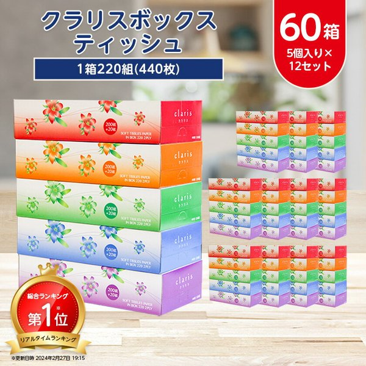
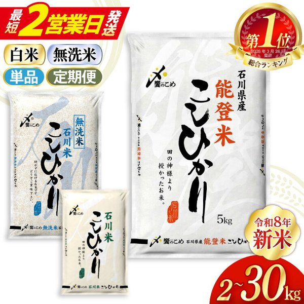
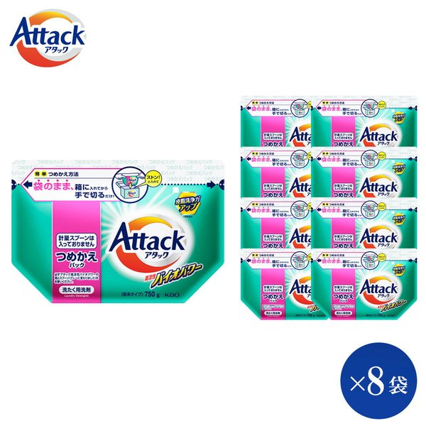
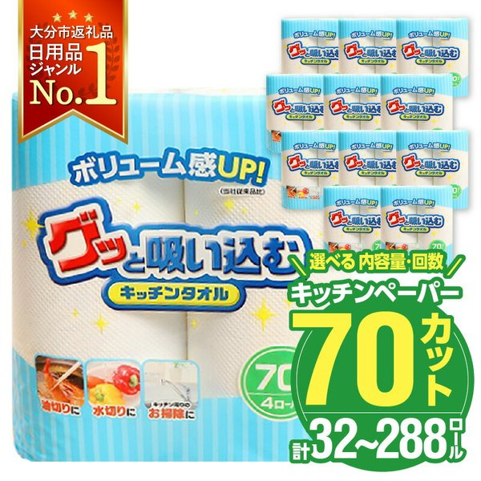
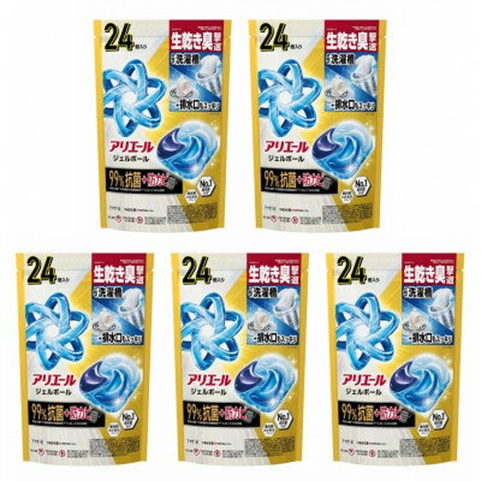
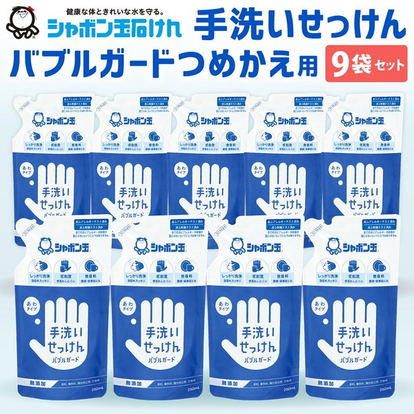
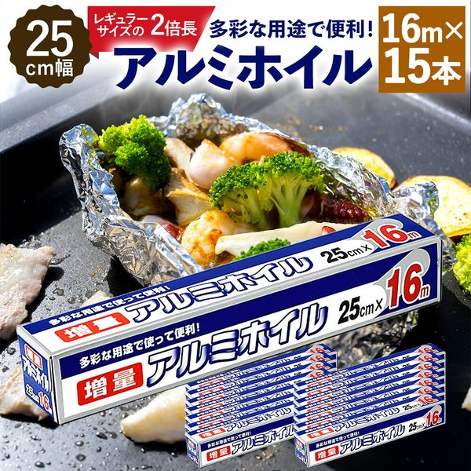
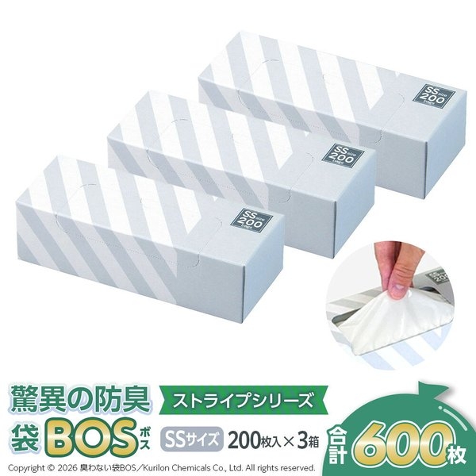
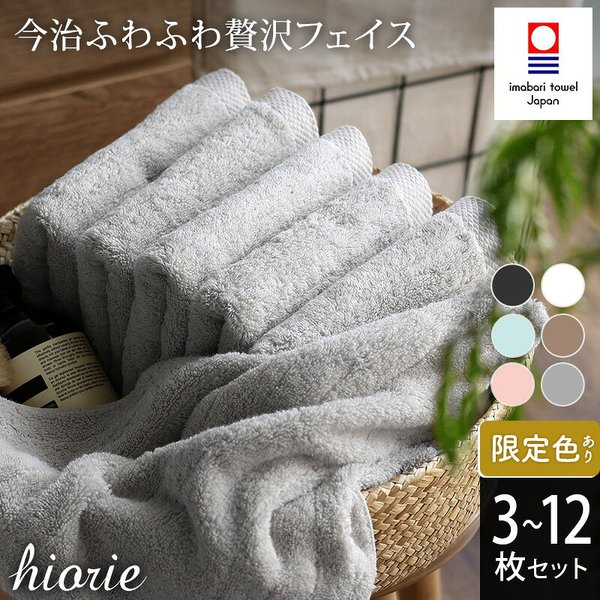

【2026年最新】ふるさと納税で食費・日用品代を節約！トイレットペーパー・ティッシュ・お米・洗剤の返礼品10選
ふるさと納税というと肉や魚介を思い浮かべがちですが、実は家計に効くのは日用品の返礼品です。トイレットペーパーやティッシュ、洗剤は毎月必ず買うものなので、一度まとめて確保できると出費がはっきり減ります。
選ぶコツは、①保管場所に入る量かどうか、②配送月を選べるか、③寄付額あたりの量が多いか、の3点。体験して「おいしかった」で終わらない、確実に元が取れる分野です。
本記事では、楽天ふるさと納税で人気の日用品・消耗品の返礼品10選を、寄付額とレビュー評価つきで写真付き紹介します。
- おすすめ10選 スペック・特徴比較表
- BEST 1｜トイレットペーパー ダブル 24／64／72ロール 選べる
- BEST 2｜ボックスティッシュ 60箱（220組入り×5個×12セット）
- BEST 3｜能登米 コシヒカリ（白米・無洗米／定期便）
- BEST 4｜アタック 高活性バイオパワー 詰め替え 750g×8袋
- BEST 5｜キッチンタオル 70カット 32／48ロール 選べる
- BEST 6｜アリエール ジェルボール プロパワー 超抗菌（24個×5個）
- BEST 7｜手洗いせっけん 泡タイプ 詰め替え 250ml×5〜20個
- BEST 8｜アルミホイル 16m×15本セット
- BEST 9｜驚異の防臭袋 BOS SSサイズ 200枚×3個（計600枚）
- BEST 10｜今治タオル フェイスタオル 3〜12枚セット
- 【読者負担0円】買わなくても得する無料サービス
- まとめ：日用品返礼品10選の選び方
| 順位 | 商品名 | ブランド | 最大の特徴・おすすめ理由 | 総合評価 |
|---|---|---|---|---|
| BEST 1 | トイレットペーパー ダブル 24／64／72ロール 選べる | トイレットペーパー（ダブル） | 配送月を選べる | 4.76 |
| BEST 2 | ボックスティッシュ 60箱（220組入り×5個×12セット） | クラリス | 60箱の大量セット | 4.59 |
| BEST 3 | 能登米 コシヒカリ（白米・無洗米／定期便） | 石川県宝達志水町 | 容量と回数を選べる定期便 | 4.82 |
| BEST 4 | アタック 高活性バイオパワー 詰め替え 750g×8袋 | 花王（KAO） | 詰め替え8袋のまとめ買い | 4.81 |
| BEST 5 | キッチンタオル 70カット 32／48ロール 選べる | キッチンタオル | 70カット入りで長く使える | 4.81 |
| BEST 6 | アリエール ジェルボール プロパワー 超抗菌（24個×5個） | P&G | 計量不要で洗濯がラク | 5.00 |
| BEST 7 | 手洗いせっけん 泡タイプ 詰め替え 250ml×5〜20個 | バブルガード | 泡タイプで使いやすい | 4.78 |
| BEST 8 | アルミホイル 16m×15本セット | アルミホイル | 16m×15本のまとめ買い | — |
| BEST 9 | 驚異の防臭袋 BOS SSサイズ 200枚×3個（計600枚） | BOS（防臭袋） | 高い防臭力 | 5.00 |
| BEST 10 | 今治タオル フェイスタオル 3〜12枚セット | 今治タオル（ヒオリエ） | 今治産の品質 | 4.79 |
トイレットペーパー ダブル 24／64／72ロール 選べる

ふるさと納税の返礼品として定番のトイレットペーパー。24・64・72ロールから必要量を選べ、配送月も指定できます。毎月必ず使うものだからこそ、寄付でまとめて確保できると家計の固定費が軽くなります。 楽天市場での寄付額は約7,500円（2026年11月時点）。
- 配送月を選べる
- 24〜72ロールから選べる
- 毎月必ず使う消耗品
- 保管場所をあらかじめ確保しておく
ボックスティッシュ 60箱（220組入り×5個×12セット）

60箱まとめて届くボックスティッシュ。1箱220組入りで、家族が多い家庭でも数か月もちます。箱を置く場所さえ確保できれば、買い足しの手間がなくなります。 楽天市場での寄付額は約16,500円（2026年11月時点）。
- 60箱の大量セット
- 220組入りで厚みがある
- 買い足しの手間が減る
- 60箱分の収納スペースが必要
能登米 コシヒカリ（白米・無洗米／定期便）

石川県宝達志水町のコシヒカリを、300gから30kgまで容量と回数を選んで受け取れる定期便。毎月決まった量が届くので、お米を買い忘れる心配がありません。米価が上がる時期の家計対策としても選ばれています。 楽天市場での寄付額は約1,500円（2026年11月時点）。
- 容量と回数を選べる定期便
- 白米・無洗米を選べる
- 産地と生産者が分かる
- 寄付額は容量と回数で変わる
アタック 高活性バイオパワー 詰め替え 750g×8袋

粉末洗濯洗剤アタックの詰め替え8袋セット。部屋干しの生乾き臭や黄ばみが気になる季節に使いやすい処方です。8袋あれば、毎日洗濯しても当分買い足さずに済みます。 楽天市場での寄付額は約20,000円（2026年11月時点）。
- 詰め替え8袋のまとめ買い
- 部屋干しのニオイ対策向き
- 粉末タイプで洗浄力が高い
- 粉末の保管は湿気を避ける
キッチンタオル 70カット 32／48ロール 選べる

しっかり吸収して破れにくいキッチンタオルの大容量セット。32ロールと48ロールから選べ、回数も指定できます。油ものの拭き取りから掃除まで使うので、切らさず置いておきたい消耗品です。 楽天市場での寄付額は約10,000円（2026年11月時点）。
- 70カット入りで長く使える
- 32／48ロールから選べる
- 吸収力が高く破れにくい
- キッチン周りに置き場所が必要
アリエール ジェルボール プロパワー 超抗菌（24個×5個）

計量いらずで放り込むだけのジェルボール洗剤。超抗菌タイプで、部屋干しが増える冬にも使いやすい処方です。24個入り×5個の詰め替えで、まとめて確保できます。 楽天市場での寄付額は約31,000円（2026年11月時点）。
- 計量不要で洗濯がラク
- 超抗菌タイプ
- 詰め替え5個のまとめ買い
- 1回あたりの単価は液体より高め
手洗いせっけん 泡タイプ 詰め替え 250ml×5〜20個

泡で出る手洗いせっけんの詰め替えセット。無添加タイプで、小さな子どもや敏感肌の家族にも使いやすい処方です。5個から20個まで選べるので、家族の人数に合わせて確保できます。 楽天市場での寄付額は約14,000円（2026年11月時点）。
- 泡タイプで使いやすい
- 無添加で家族向け
- 5〜20個から選べる
- 泡タイプは減りが早い
アルミホイル 16m×15本セット

16m巻きのアルミホイルを15本まとめて届けてくれる返礼品。料理の下ごしらえからグリルの受け皿まで、毎日のように使う消耗品です。15本あれば一年近く買い足さずに済みます。 楽天市場での寄付額は約11,000円（2026年11月時点）。
- 16m×15本のまとめ買い
- レギュラーサイズで使いやすい
- キッチンで毎日使う定番
- 立てて収納できる場所が必要
驚異の防臭袋 BOS SSサイズ 200枚×3個（計600枚）

中のニオイを外に漏らしにくい防臭袋のSSサイズ。200枚入り×3個で計600枚と、当分なくなりません。生ゴミや介護、ペットの処理など、ニオイを出したくない場面で威力を発揮します。 楽天市場での寄付額は約22,000円（2026年11月時点）。
- 高い防臭力
- 計600枚の大容量
- SSサイズで小分けに使いやすい
- サイズが小さいので大型ゴミには不向き
今治タオル フェイスタオル 3〜12枚セット

今治産のふわふわフェイスタオルを、3枚から12枚まで選べるセット。6色から選べ、洗面所の雰囲気に合わせられます。毎日使うタオルをいい状態に保てるので、肌触りのストレスが減ります。 楽天市場での寄付額は約13,000円（2026年11月時点）。
- 今治産の品質
- 3〜12枚から選べる
- 6色から選べる
- 枚数によって寄付額が変わる
この記事の商品を買う前に、まずは無料で得する選択肢をチェック。どれも登録・利用は0円で、無料期間中に解約すれば料金はかかりません。読みたい雑誌がある人、ポイントを貯めたい人、アンケートなら気軽という人、それぞれに合うものを選べます。
初回31日無料・無料期間中に解約すれば0円 → 楽天ポイントモール｜登録無料で毎日ポイ活
買い物なしでもポイントが貯まる無料サービス → 楽天インサイト｜アンケートに答えてポイント
登録無料・すきま時間のアンケートで貯まる → 楽天カード｜年会費永年無料
新規発行・年会費ずっと0円 →
4つのサービスの違いと使い分けは「出費0円で得する！買わずにポイントが貯まる無料サービス厳選4選」でまとめています。
💡 まとめ：日用品返礼品10選の選び方
ふるさと納税は、嗜好品より日用品のほうが家計への効果がはっきり出ます。まずは毎月必ず買うものを1品だけ返礼品に置き換えてみてください。物価が上がるほど、この置き換えの価値は大きくなります。
楽天市場では「5と0のつく日」や「お買い物マラソン」などのキャンペーンに合わせて購入すると、ポイント還元が最大化してお得に手に入ります。ぜひチェックしてみてくださいね。